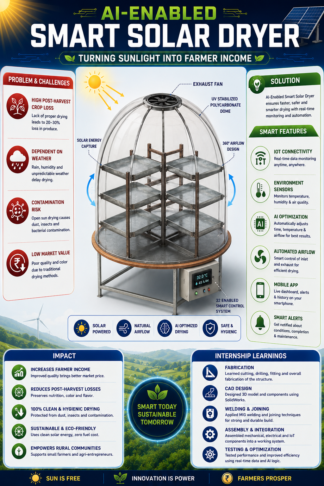

AI-Enabled Smart Solar Dryer Project Poster Presentation
To present the AI-Enabled Smart Solar Dryer project poster in a modern, infographic style, summarizing the complete project journey, technical innovations, practical fabrication work, and internship learnings.

A modern and professional infographic poster was successfully created to represent the AI-Enabled Smart Solar Dryer project. The poster effectively summarized the project problem, solution, design, smart features, impact, and internship learnings in a visually appealing format.
This poster became the final deliverable of Week 4 – Day 5, symbolizing the successful completion of the internship project and showcasing both technical innovation and practical engineering experience.